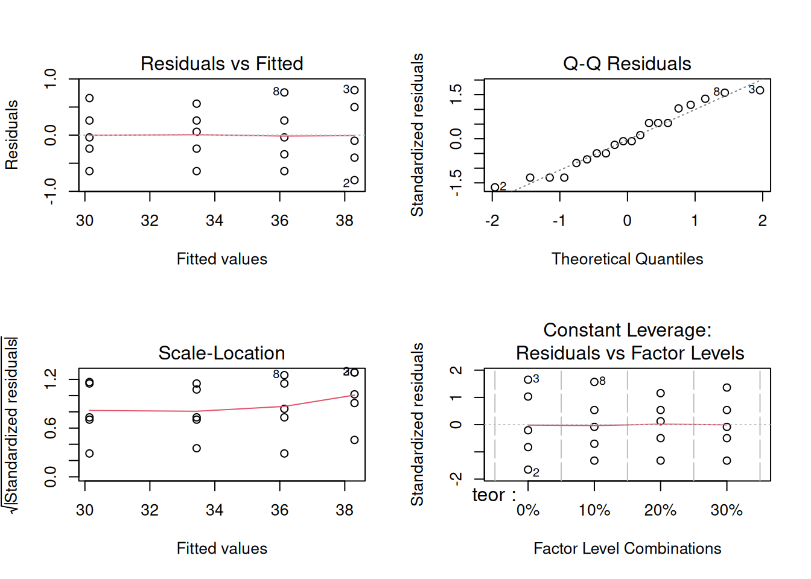
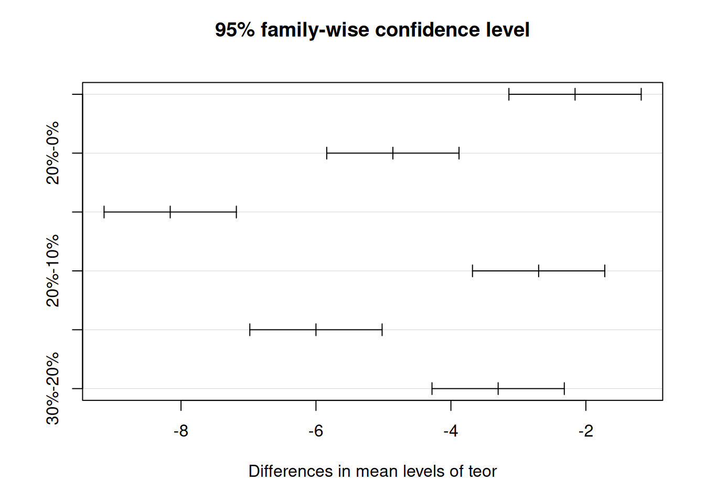
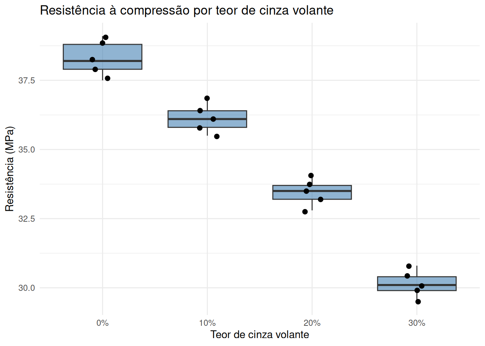

# ============================================================
# EXPERIMENTO 1 - DIC
# Resistência à compressão x Teor de cinza volante
# ============================================================
dados_dic <- data.frame(
teor = factor(rep(c("0%","10%","20%","30%"), each = 5),
levels = c("0%","10%","20%","30%")),
resist = c(38.2, 37.5, 39.1, 38.8, 37.9, # 0%
36.1, 35.8, 36.9, 36.4, 35.5, # 10%
33.2, 34.0, 33.7, 32.8, 33.5, # 20%
30.1, 29.5, 30.8, 29.9, 30.4) # 30%
)
# --- Estatísticas descritivas ---
aggregate(resist ~ teor, data = dados_dic,
FUN = function(x) c(media = mean(x), dp = sd(x), n = length(x))) teor resist.media resist.dp resist.n
1 0% 38.3000000 0.6519202 5.0000000
2 10% 36.1400000 0.5412947 5.0000000
3 20% 33.4400000 0.4615192 5.0000000
4 30% 30.1400000 0.4929503 5.0000000# --- Verificação de pressupostos ---
modelo_dic <- aov(resist ~ teor, data = dados_dic)
# Normalidade dos resíduos (Shapiro-Wilk)
shapiro.test(residuals(modelo_dic))
Shapiro-Wilk normality test
data: residuals(modelo_dic)
W = 0.95277, p-value = 0.4111# Homocedasticidade (Levene - pacote car)
# install.packages("car")
library(car)Carregando pacotes exigidos: carDataleveneTest(resist ~ teor, data = dados_dic)Levene's Test for Homogeneity of Variance (center = median)
Df F value Pr(>F)
group 3 0.2695 0.8464
16 # Independência (Durbin-Watson)
# install.packages("lmtest")
library(lmtest)Carregando pacotes exigidos: zoo
Anexando pacote: 'zoo'Os seguintes objetos são mascarados por 'package:base':
as.Date, as.Date.numericdwtest(modelo_dic)
Durbin-Watson test
data: modelo_dic
DW = 2.502, p-value = 0.6819
alternative hypothesis: true autocorrelation is greater than 0# --- ANOVA ---
summary(modelo_dic) Df Sum Sq Mean Sq F value Pr(>F)
teor 3 186.3 62.10 211.6 4.41e-13 ***
Residuals 16 4.7 0.29
---
Signif. codes: 0 '***' 0.001 '**' 0.01 '*' 0.05 '.' 0.1 ' ' 1# --- Diagnóstico gráfico ---
par(mfrow = c(2,2))
plot(modelo_dic)
par(mfrow = c(1,1))
# --- Comparações múltiplas (Tukey) ---
tukey_dic <- TukeyHSD(modelo_dic)
tukey_dic Tukey multiple comparisons of means
95% family-wise confidence level
Fit: aov(formula = resist ~ teor, data = dados_dic)
$teor
diff lwr upr p adj
10%-0% -2.16 -3.140291 -1.179709 5.64e-05
20%-0% -4.86 -5.840291 -3.879709 0.00e+00
30%-0% -8.16 -9.140291 -7.179709 0.00e+00
20%-10% -2.70 -3.680291 -1.719709 3.70e-06
30%-10% -6.00 -6.980291 -5.019709 0.00e+00
30%-20% -3.30 -4.280291 -2.319709 3.00e-07plot(tukey_dic)
# --- Alternativa não paramétrica (se pressupostos falharem) ---
kruskal.test(resist ~ teor, data = dados_dic)
Kruskal-Wallis rank sum test
data: resist by teor
Kruskal-Wallis chi-squared = 17.857, df = 3, p-value = 0.0004707# --- Gráfico de médias com erro padrão ---
library(ggplot2)
ggplot(dados_dic, aes(x = teor, y = resist)) +
geom_boxplot(fill = "steelblue", alpha = 0.6) +
geom_point(position = position_jitter(width = 0.1), size = 2) +
labs(title = "Resistência à compressão por teor de cinza volante",
x = "Teor de cinza volante", y = "Resistência (MPa)") +
theme_minimal()